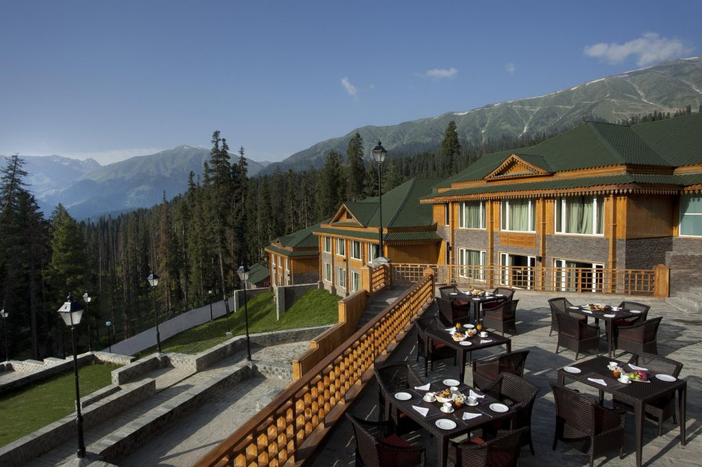
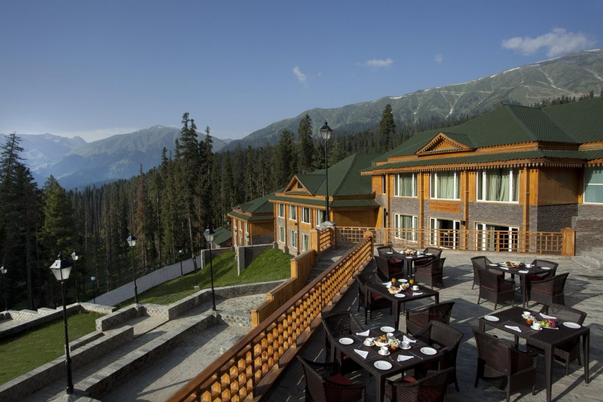

Highlights
- This Kashmir Tour is a fully loaded group holiday.
- Enjoy the tranquility of Srinagar's iconic Dal Lake, with an optional Shikara ride exploring floating markets and gardens.
- Visit the famed Mughal Gardens like Shalimar Bagh and Nishat Bagh, featuring traditional Persian-style landscaping with terraced lawns and water features.
- During the winter months, indulge in skiing, snowboarding, and sledging in the snow-covered landscapes of Gulmarg.
- Explore the serene beauty of Betaab Valley in Pahalgam, surrounded by verdant meadows and the crystal-clear Lidder River.
- Witness the lush meadows of Sonmarg and embark on an optional excursion to Thajiwas Glacier, offering snow even in summer.
- Discover local markets, known for exquisite Pashmina shawls, traditional carpets, saffron, and Kashmiri art pieces.


 

Exotic Kashmir with Gulmarg - 6 Nights / 7 Days
Day 1: Arrival in Srinagar
- Arrival at Srinagar airport and transfer to a hotel or houseboat.
- Leisure time at Dal Lake, optional Shikara ride.
- Explore Mughal gardens like Shalimar Bagh, Nishat Bagh.
Day 2: Srinagar Local Tour
- Visit Shankaracharya Temple, offering panoramic views of Srinagar.
- Explore local bazaars for Kashmiri handicrafts and Pashmina shawls.
- Return to houseboat/hotel for overnight stay.
Day 3: Srinagar to Gulmarg
- Transfer to Gulmarg, renowned for its beautiful meadows and snow-capped peaks.
- Enjoy the Gondola ride (Asia's highest cable car).
- Optional skiing or snowboarding in the winter season.
- Overnight stay in Gulmarg.
Day 4: Gulmarg Exploration
- Free day to explore Gulmarg's lush meadows and serene landscapes.
- Optional: Enjoy activities like horse riding or visit the Golf Course (one of the highest in the world).
- Return to Srinagar for an overnight stay.
Day 5: Srinagar to Pahalgam
- Drive to Pahalgam, known as the "Valley of Shepherds."
- Visit the enchanting Betaab Valley and Aru Valley, surrounded by lush green landscapes.
- Explore the Lidder River and scenic spots along the way.
Day 6: Pahalgam to Sonmarg
- After breakfast, proceed to Sonmarg, the "Meadow of Gold."
- Optional excursion to the Thajiwas Glacier.
- Return to Srinagar for an overnight stay.
Day 7: Departure from Srinagar
- After breakfast, transfer to Srinagar airport for your onward journey.
- End of the Exotic Kashmir with Gulmarg Tour.